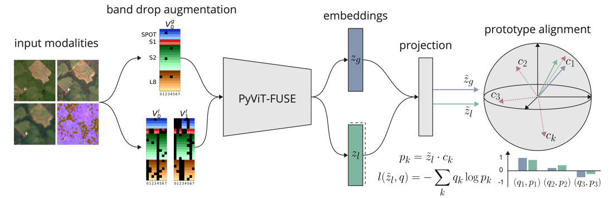
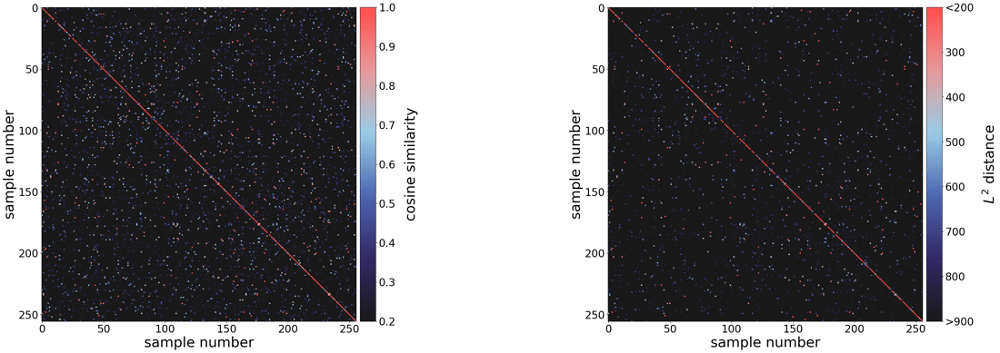
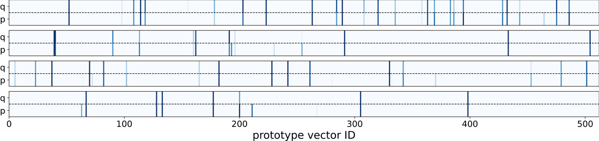

Over the past year, I've been working on something that's been both technically challenging and deeply inspiring: building a foundation model for Earth observation. The idea is simple to describe but ambitious in scope — can we train a single model that understands satellite imagery from any sensor, at any resolution, and extract meaningful information about our planet?
This post is a summary of that journey, from the first prototype to early results, and what it might mean for the future of remote sensing.
From Language to Landscapes: Why Foundation Models Matter
The success of large language models has changed how we think about AI: by training on massive, diverse data, a model can learn general representations of language that transfer to countless downstream tasks.
The same concept can be applied to imagery — in our case, Earth observation imagery from satellites. Instead of words and sentences, our "language" consists of pixels, spectral bands, and spatial patterns. The goal is to learn an internal representation of the Earth that captures its structure, texture, and composition across all kinds of sensors.
In remote sensing, this is particularly exciting (and challenging) because different satellites see the world in very different ways. They vary in spectral composition, spatial resolution, and temporal coverage. Some capture fine optical details, others see radar backscatter or thermal signatures. A true foundation model for Earth observation must learn to fuse all these modalities to build a shared understanding of the planet.
That's the problem I set out to tackle.
From Concept to Architecture: The PyViT-FUSE Model
At the core of the project is a model architecture called PyViT-FUSE. It's designed to process data from multiple satellite sources at their native resolutions and merge them into a single, coherent embedding — a compact vector that represents the content of an image patch.

Fig 1: Overview of the PyViT-FUSE architecture
The architecture has three main parts:
- Input module: Reads imagery from different sensors (e.g., Sentinel, SPOT) while keeping their unique resolutions intact.
- Fusion module: Combines the different inputs into a unified representation, no matter which bands or sensors are available.
- Pyramidal Vision Transformer (ViT): Extracts hierarchical features at multiple scales, similar to how CNNs build progressively richer spatial features.
These encoder features can be reused for a wide range of downstream tasks, such as segmentation or classification, by attaching lightweight decoders.
Training the Model: Self-Supervised Learning with SwAV
One of the most important aspects of this work is that the model is trained without any labels. Instead, it learns by comparing different "views" of the same location — a technique known as self-supervised learning.
I used a modified version of the SwAV algorithm, which clusters feature embeddings and encourages the model to align similar patches with the same cluster prototypes.

Fig 2: Illustration of the modified SwAV algorithm which generates a global view through weak augmentations and multiple local views through heavy augmentations including band and sensor drop. The resulting embeddings are aligned with learned prototype vectors where views of the same image patch are expected to be aligned with the same prototype vectors.
To make this approach work for remote sensing, I introduced a band-drop augmentation. The idea is that a single surface patch can be observed by multiple sensors, each with different spectral bands. By randomly dropping or mixing these bands during training, the model learns to produce consistent embeddings even when some modalities are missing.
This means that once trained, the model can process any combination of input bands — an essential property for real-world satellite applications.
What the Model Learned
After training a medium-sized model (~100 million parameters) on a globally sampled dataset, I started exploring what the embeddings looked like. One way to test this is by checking whether the same location observed by different sensors ends up close together in feature space.

Fig 3: Cosine similarity (left) and L2 distance between the embeddings of the global view and local view across the samples within a batch.
That's exactly what we found — embeddings of the same surface patch were closely aligned, even if one came from optical imagery and the other from radar or multispectral data.
Visualizing this alignment showed clear structure: each image view strongly aligned with only a few prototype vectors, and corresponding views (global and local) matched the same prototypes. The cosine similarity between pairs of embeddings confirmed this — high for the same sample, low for different ones.

Fig 4: Illustration of embedding alignment with all prototypes for the global (q) and local (p) view.
From Representations to Real Applications
A foundation model is only useful if its learned representations can be applied to real-world tasks. To test this, I trained a lightweight decoder with a frozen encoder for a few example applications.
1. Detecting Solar PV Installations
The first experiment focused on detecting solar photovoltaic (PV) arrays — small structures, spatially sparse, and often difficult to identify from single modalities.

Fig 5: Inputs (first 4 columns from the left), target (5th column) and the outputs of various models which use different input modalities. The right column corresponds to a reference model based on ResNet-50.
Using the foundation model as the encoder, I built a simple convolutional decoder that upsamples and merges feature maps from all encoder depths (a UNet-style design). The results were striking:
- Adding more modalities consistently improved accuracy.
- When clouds obscured parts of the optical imagery, other sensors filled in the missing information.
This was a great example of how multi-modal fusion directly improves model robustness.
2. Cloud and Shadow Detection
Next, I applied the same setup to cloud and shadow segmentation — a classic task in remote sensing.

Fig 6: Inputs (two first columns from the left), target (3rd column) and model output. The right column corresponds to a reference model based on ResNet-50.
The model outputs three classes (cloud, shadow, background) and works on single-modality inputs. Despite its simplicity, the foundation-based model performed on par or better than a reference ResNet-50 model, especially in challenging illumination conditions.
These early experiments confirmed what I hoped for: the pretrained embeddings make downstream models both faster to train and more accurate.
Compressing Earth: The Power of Embeddings
One of the most exciting implications of this work is that each embedding — the output of the encoder — acts as a highly compressed representation of an image scene.
Instead of storing or reprocessing terabytes of raw satellite data, we could imagine precomputing embeddings for all available scenes. These could be indexed and searched directly, enabling tasks like:
- Finding visually or structurally similar locations on Earth.
- Rapid change detection across time.
- Plug-and-play training for new applications.

Fig 7: Visualization of embeddings generated by PyViT-FUSE for each 960m × 960m patch. The color represents the distance in feature space by projecting the 1024-dimensional feature vector onto a 3-dimensional RGB space by a parametric UMAP model.
In a way, these embeddings become a memory of the planet — a compressed but meaningful representation of its surface.
Direct Application of Embeddings — Similarity Search
The most direct use-case of embeddings is to use the embedding of a specific location as a query to find similar locations across a large spatial extent. This can be done efficiently by measuring alignment between embeddings using cosine similarity or L2 distances in feature space.
I built a small application to explore similarity search interactively. Clicking on the map retrieves the closest available embedding, representing the information at that location. It then finds similar locations defined as having an L2 distance below a certain threshold. The found locations are visualized with colors representing the distance from green (close) to red (far) in feature space. This demonstrates the efficiency and direct usability of embeddings without further model training.
Similarity search demo: clicking a location on the map finds structurally similar patches worldwide.